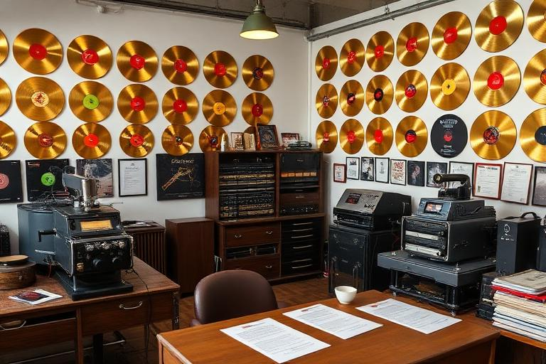

Business guide
Businesses & Companies
Companies make the RockMundo world work: venues host shows, studios record music, rehearsal spaces prepare bands, labels support releases, shops sell equipment and many other businesses provide jobs and services. Running one is a different game from simply being a customer.
In brief
A healthy company needs a clear purpose, enough working capital, suitable staff, sensible pricing or capacity decisions and regular attention to operating results. Expanding faster than the business can support is usually riskier than growing from stable fundamentals.
Different companies, different jobs
RockMundo supports businesses with very different operational needs. Music-facing examples include labels, recording studios, rehearsal spaces, venues, logistics operations, factories and instrument shops, while hospitality, retail and other world businesses have their own staffing and customer patterns.



Staffing is part of the business model
Companies can employ different roles according to their type. General management, finance, marketing, security and operations may appear across many businesses, while specialist roles—engineers, producers, bookers, technicians, drivers, sales staff or hospitality workers—exist because the company needs them.
| Staff decision | Question to ask |
|---|---|
| Role | Does the company actually need this capability? |
| Wage | Can expected revenue support the recurring payroll? |
| Specialist coverage | Are key service roles missing while generic roles are overstaffed? |
| Management | Does the business have enough operational oversight for its scale? |
Operations and capacity
Every company converts resources into a service or product. The operational question is therefore: what limits this company from serving more customers or serving them better?
Capacity
Studios, rehearsal rooms and venues have physical or schedule limits. Empty capacity and oversold capacity are different problems.
Quality
Upgrades and specialist staff can improve the service, but premium quality only pays when customers value and can access it.
Pricing
Price should reflect the offer and the market rather than simply copying the most expensive competitor.
Location
City demand and the local music economy affect which services are naturally useful.
Company finances

Track revenue, payroll, operating costs and investment separately from the owner's personal money. A company that pays for itself consistently creates more strategic freedom than one kept alive through repeated emergency transfers.
- Know the regular payroll before expanding staff.
- Keep enough cash for expected operating cycles.
- Review whether an upgrade solves a real constraint.
- Separate company performance from the owner's personal wealth.
- Check transaction history when the displayed balance surprises you.
Growing the business
- Make the core service reliable. Fix availability, staffing or operational gaps first.
- Build repeatable demand. A larger business with no customers is simply a larger cost base.
- Improve the bottleneck. Add the staff, capacity or quality that solves the clearest limitation.
- Expand only with headroom. Preserve enough money that one weak period does not immediately create a crisis.
Businesses and the music world
The most interesting companies often connect directly to other players. A venue needs bands and audiences; a studio needs artists; a label needs releases; a logistics company needs movement; shops and factories sit behind equipment or merchandise. These connections mean a company can become part of the community rather than an isolated money generator.